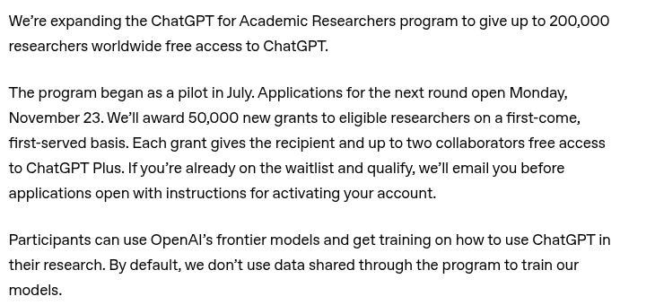

ChatGPT researcher grants open 23 November: three Plus seats for eligible teams
This is not a free-Plus offer for every student. OpenAI says the next ChatGPT for Academic Researchers round opens Monday, 23 November 2026. Eligible research faculty and postdoctoral researchers can apply for three complimentary Plus seats for up to 12 months: one for themselves and up to two for eligible collaborators at the same institution. Research students can be collaborators, not independent applicant owners.
What is new?
OpenAI's 16 November announcement describes 50,000 new grants, awarded to qualifying applicants on a first-come, first-served basis. It replaces the pilot's lottery approach for this round. The new offer is Plus, not the older Pro pilot. Being eligible does not guarantee approval.
Who can apply?
- A research faculty member or postdoctoral researcher at an eligible academic institution in a supported country.
- Someone with published research from the past three years related to an eligible field, who plans to use ChatGPT for academic research.
- Fields listed in the current FAQ: Biological Sciences, Chemistry and Materials, Computer Science, Earth and Planetary Sciences, Engineering, Mathematics, and Physics.
OpenAI's comparison guide lists regional availability as all regions except China and Hong Kong, subject to programme eligibility and grant terms. India is not excluded by that regional description, but an Indian affiliation alone does not establish that a particular institution or applicant qualifies.
Can students get a seat?
Eligible research students at the same institution may be invited as collaborators by an approved researcher. That does not make a student eligible to apply independently as the researcher owner. The default sponsored allocation is three people in total, not three collaborators plus an owner.

Is it free, and for how long?
The current self-serve offer provides three complimentary Plus seats for up to 12 months. The grant's own offer specifies the dates. For self-serve access, the period starts when the researcher account is provisioned; collaborator seats share the same end date, so inviting someone later does not restart their year.
Additional seats, upgrades and usage outside the sponsored offer are not automatically complimentary. The programme does not include OpenAI API credits, does not upgrade your personal workspace, and does not promise unlimited usage or every consumer Plus feature. No payment or application was attempted in our check.
What can you do before opening day?
- Read the current programme FAQ and check your applicant role, institution, field and research-publication requirement.
- Use the programme link from OpenAI's official announcement. On 17 November, opening that route while signed out led to ChatGPT's login page. We did not sign in.
- Recheck the official announcement and application page when the next round opens on 23 November. No opening time or timezone was established by the sources we checked.
- Use only the official verification process. The FAQ currently says new applications are closed and the waitlist is informational. Joining a waitlist is not an application under review or a reserved grant.
Privacy and limits worth reading
OpenAI says content in the researcher workspace is not used for model training by default. Its FAQ also says workspace administrators can manage workspace data and may opt in to sharing data for model improvement. Do not treat the offer as permission to upload confidential research, participant data or material your institution restricts.
What AiCoN checked
We read the official announcement, updated help article and researcher-access comparison on 17 November 2026. We opened the public announcement and followed its linked programme route as far as the signed-out login page. We did not log in, join the waitlist, apply, verify academic status, obtain a grant or test the sponsored Plus workspace. This is an upcoming-offer notice, not an application tutorial or a performance review.
Official sources
- 16 November expansion announcement.
- Programme eligibility, grant terms and FAQ.
- Researcher-access comparison and regional scope.
- Programme route linked by OpenAI (login required in our signed-out check; not an open-application claim today).
Independent explainer by AiCoN, not an OpenAI announcement. Recheck the current round's terms before applying.